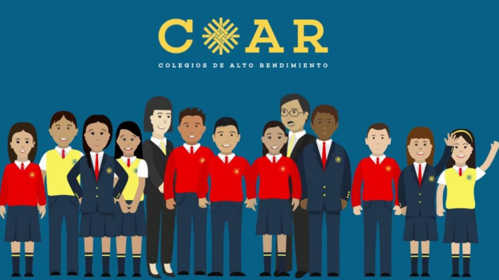

Colegios de alto rendimiento
Mensaje de bienvenida
¡Bienvenido(a) al sitio web de los Colegios de Alto Rendimiento! Somos centros educativos estatales de nivel secundaria que ofrece un modelo educativo de excelencia académica a estudiantes con desempeño sobresaliente. El servicio incluye educación de nivel internacional y alojamiento durante el tercero, cuarto y quinto año de secundaria. Postula a los COAR este 2025, y unéte a la gran familia que forma a los futuros agentes de cambio del Perú.

Características de los COAR
- Servicio educativo de calidad internacional, brindando a los estudiantes la posibilidad de cursar el bachillerato internacional.
- Servicio de residentado, brindado a los estudiantes los servicios de alojamiento, alimentación y lavandería durante el año escolar.
- Servicio de orientación psicológica y tutoría, brindando a los estudiantes servicios para mejorar la gestión de problemas académicos y personales.
- Servicio de biblioteca y material de investigación, brindando a los estudiantes una laptop y biblioteca con diversos texto para su educación autodidácta.
Fases del proceso de admisión
- Inscripción de postulantes aptos. Es decir, los estudiantes que ocuparon durante el 1ero y 2do año de secundaria en una escuela pública los 10 primeros puestos.
- Primera fase: Examen de conocimientos en las áreas de matemática y lectura.
- Segunda fase: Entrevista personal a los postulantes que superaron la primera fase.
Las fases de postulación son eliminatorias.